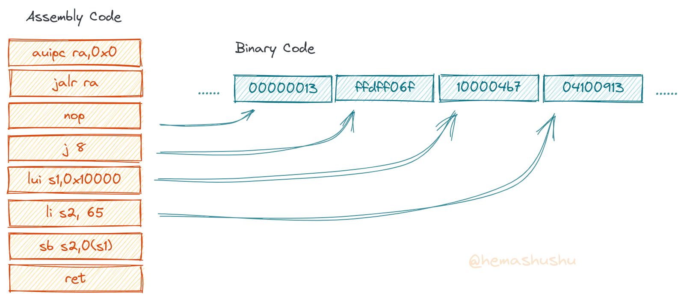
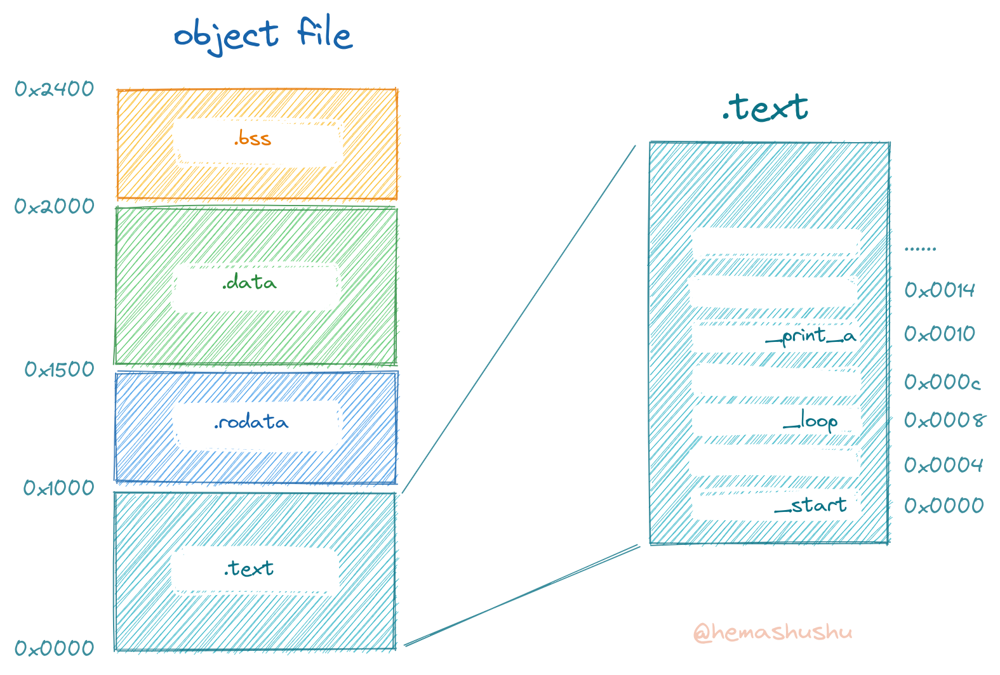

构建最小的 RISC-V 程序
在上一篇文章我们简单地了解了交叉编译工具 RISC-V GCC 的基本使用方法。这篇文章将会以纯汇编构建两个程序：一个最小的裸机程序和一个最小的 Linux 应用程序。一般情况下我们不需要直接使用汇编写程序，但通过这种方式可以排除不相关的内容，以了解一个 RISC-V 程序的最根本的组成和运行的原理。
最小的裸机程序
本章演示的是一个最终只有大约 30 个字节的 RISC-V 裸机程序，该程序用纯汇编写，功能也非常简单，就是向串口打印一个大写的字母 “A”，然后进入一个无限循环。
源代码
源代码位于目录 resouces/minimal-bare-metal 之下的文件 app.S（注意扩展名为大写的字母 S，跟小写 s 的区别在于大写 S 表示需要预处理，一般我们手写的汇编源代码文件的扩展名建议使用大写字母 S），其内容如下：
.equ VIRT_UART0, 0x10000000
.section .text.entry
.globl _start
.globl _print_a
_start:
call _print_a
_loop:
nop
j _loop
_print_a:
li s1, VIRT_UART0 # set s1 = 0x1000_0000
li s2, 0x41 # set s2 = 0x41
sb s2, 0(s1) # store s2 (as byte) to memory[s1+0]
# address 0x1000_0000 is mapped to UART0
# checkout QEMU source https://github.com/qemu/qemu/blob/master/hw/riscv/virt.c
ret
- 程序的第 1 行用于指定接下来的汇编的结果放在目标文件的哪个段。
汇编代码经过汇编之后会生成一系列平铺的、无结构的二进制数据，具体来说就是类似 “101000110010…” 这样长长的一串二进制数字，为了便于阅读，有时也会以十六进制表示，比如 “A3 20 65 66 …"，无论哪种表示形式，本质都是一样的。而汇编代码则大约相当于这些二进制数据的文本格式，很多汇编语句跟机器指令是一对一的关系，汇编器的任务大致上是将 “文本格式的指令和数据” 翻译成 “二进制格式的指令和数据”。

这些数据中有些是（二进制形式）机器指令，有些是程序中的诸如整数常量、字符串常量等，汇编器根据数据的性质分段储存在汇编器的输出文件（称为 目标文件）当中。一个典型的目标文件有 .text, .rodata, .data, .bss 等段，它们分别是指令序列、只读数据（比如数字和字符串常量）、数据（全局变量）、未初始化的全局变量（或者初始值为 0 的全局变量）。

为了细化管理，每个段又可以细分为多个子段，子段的名字可以随意命名，不过有些是约定俗称的（以后的文章会讲解）。
上面示例程序中的 .text.entry 表示 .text 段里面的一个叫做 .entry 的子段，该名字是我随意起的。
-
接下来的两句
.globl表示导出两个 符号，.globl关键字后面跟着的是标签的名称，下面会讲解。 -
_start是一个标签，标签实质上是一个地址值。
正如上面的第 1 段所说，目标文件是一连串二进制数据，虽然人类无法直接阅读，但我们知道其实每个数字都有具体含义的，因此我们以 字节 为单位，给段里面的数据加上一连串假想的序号，这个序号就是 地址，这样一来就可以用地址来定位每一个数据了。
但有时直接用数字地址不够直观，所以又有了 标签。我们给某些特殊的地址加上标签，比如在上面的程序当中，给 0x0008 加上名为 _loop 的标签，给 0x0010 加上名为 _print_a 标签，这样每当程序需求跳转到这两个位置时，就不用写 0x0008 和 0x0010，而是写成 _loop 和 _print_a，显然用标签来表示一个地址更直观。
最重要的是，我们在书写汇编文本时，其实还不知道每个指令最后被编译之后的地址，所以需要用标签来代表程序当中的一个位置。
具体来说，有两种情况需要用到标签：
a. 用于构建一个函数，通常一个函数由 “一个标签” + “一系列指令” + “一个返回指令” 组成，此时标签的名称就是函数的名称。 b. 用于构建流程控制结构，比如条件语句、循环语句等，其实都是通过 “标签” + “跳转指令” 组成。
_loop标签以及它后面的两个指令用于形成了一个无限循环。
为什么需要一个无限循环呢？这需要从机器是如何执行指令序列说起。从处理器的角度来看，机器指令序列是没有函数概念，运行程序的本质是将程序的一条长长的二进制指令序列加载进内存，然后从第一个指令开始执行，执行完一个指令就指向下一个指令，假如程序当中没有跳转指令的话，则会一直执行到最后一个指令。假如最后一个指令后面还有内存空间，则会一直执行到内存的尽头（尽管这些空间里不是有效的指令，只要不出错则处理器仍然会执行）。处理器就像一个蒙着眼睛捂着耳朵的固执司机，只要路和汽油还有，只要没撞上障碍物，他就一直驱使着车前进。
显然从处理器或者指令序列的角度来看，结构之间、函数之间根本没有边界。所以我们需要约定：一个函数以某个地址开始，这个地址需要加上标签（一般标签名就是函数名），然后以一个返回指令（ret 指令）以此表示函数结束。
然后回过头来看函数 _start，它的工作是调用另一个函数 _print_a，调用完毕之后，程序的所有任务就全部完成了。不过 _start 函数是程序的入口，是一切的开端，显然它没有调用者，所以我们没法在该函数的工作完成之后使用 ret 指令返回。为了防止处理器在执行完 _start 函数之后继续往下执行，只好在函数的末尾处设了一个无限循环，让处理器在这里原地打转（虽然这个方法似乎不怎么优雅）。
_print_a是一个标签，同时也是一个完整的函数的名称，该函数的作用是把 byte 类型的整数0x41（即大写字母A对应的 ASCII 号码）写入内存地址0x1000_0000，这个内存地址被映射到 UART 端口（类似串口控制台，即 Serial Console），QEMU 的 UART 被重定向到虚拟终端，所以实际上就是向虚拟终端输出了一个大写字母A，_print_a函数的最后一句是ret指令，也就是返回到调用函数指令的下一条指令。
汇编源代码当中
#符号以及它后面的文本表示注释。
汇编
下面使用 RISC-V GCC 汇编器 riscv64-elf-as 生成目标文件：
$ riscv64-elf-as -g -o app.o app.S
- 参数
-g表示同时生成供 GDB 使用的额外调试信息调试信息。 - 参数
-o app.o用于指定输出文件的名称（注意，在阅读和理解这条命令时，需要把这个参数和值的组合视为一个整体，后面的a.S不属于这个参数的一部分）。 - 参数
a.S表示源文件的名称路径。
因 Linux 发行版的不同，RISC-V GCC 工具链当中的各个工具的名称前缀可能会有所不同，比如
riscv64-elf-*会被命名为riscv64-unknown-elf-*。另外注意区分riscv64-elf-*和riscv64-linux-gnu-*，前者用于编译 “裸机” 程序，后者用于编译在 Linux 环境中运行的程序。
然后将会得到文件 app.o。
目标文件
下面检查目标文件的一些基本信息。
文件类型
先检查文件类型：
$ file app.o
输出内容如下：
app.o: ELF 64-bit LSB relocatable, UCB RISC-V, double-float ABI, version 1 (SYSV), with debug_info, not stripped
可见汇编器输出的是一个 ELF 格式的 可重定位文件，也就是平常说的 目标文件，它还不是可执行文件。有关 ELF 格式的 3 中类型，可以参阅上一篇文章 RISC-V GCC 基础。
符号列表
正如前面章节所述，汇编代码里会有表示地址的标签，这些标签经过 .globl 导出，就形成可以供外部查看的 符号（不过并非所有符号都是标签），可以粗略地把符号理解为函数名称或者全局变量名称。
使用工具 riscv64-elf-nm 可以查看目标文件的导出符号列表：
$ riscv64-elf-nm app.o
输出的内容如下：
0000000000000008 t _loop
0000000000000010 T _print_a
0000000000000000 T _start
左边一列是各个符号的虚拟地址，右边一列是符号的名称，中间一列是符号类型的代号，部分代号的含义如下：
- A: Global absolute symbol.
- a: Local absolute symbol.
- B: Global bss symbol.
- b: Local bss symbol.
- D: Global data symbol.
- d: Local data symbol.
- T: Global text symbol.
- t: Local text symbol.
- U: Undefined symbol.
符号类型代号当中，大写的表示是导出的（供外部使用的），小写的表示局部的（供内部使用的）。详细的列表可参阅 GNU Binary Utilities Document 当中的 nm 一章。
类型 U 比较特殊，表示未定义的符号。比如在一个源代码文件里，调用了一个外部函数，那么这个外部函数的名称就是一个未定义的符号。可见这里的 “未定义” 是相对当前源代码文件而言的。
GCC 工具链里很多程序会提供相似的功能，比如列符号表的程序
nm app.o，其实也可以使用objdump -t app.o列出，还可以使用readelf --syms app.o列出。后面还会看到更多这样的情况，我们根据自己的喜好和习惯选择即可。
段
使用 riscv64-elf-objdump -h 可以查看目标文件的段信息：
$ riscv64-elf-objdump -h app.o
输出的（部分）内容如下：
Idx Name Size VMA LMA File off Algn
0 .text 00000020 0000000000000000 0000000000000000 00000040 2**2
CONTENTS, ALLOC, LOAD, RELOC, READONLY, CODE
1 .data 00000000 0000000000000000 0000000000000000 00000060 2**0
CONTENTS, ALLOC, LOAD, DATA
2 .bss 00000000 0000000000000000 0000000000000000 00000060 2**0
ALLOC
如果使用
-x参数，将会看到所有的段，包括调试信息的段，不过一般不需要关心这些段的内容。
.text, .data 和 .bss 是段的名称，VMA 和 LMA 分别表示虚拟内存地址和加载地址，ALLOC, LOAD, READONLY, CODE 等是段的标记，程序加载器会根据该标记来决定处理该段的方式。
比如 ALLOC 表示程序加载器需要分配空间给该段，LOAD 表示该段需要从文件加载进内存，READONLY 表示该段的内容不能被子进程修改，CODE 表示该段是可执行代码，DATA 表示该段是数据段。完整的标记列表可以参阅 GDB - section-flag。
除了
riscv64-elf-objdump -h，也可以使用riscv64-elf-readelf -S app.o列出目标文件的段信息。
ELF 的段（section）有两个视图：一个是从汇编器和链接器等工具看到的 section 视图（上面看到的都是这种视图），另一个是从程序加载器看到的 segment 视图（也称为 program 视图）。
section 视图在 “section headers” 里列出，segment 视图在 “program headers” 里列出；section 视图跟 section 基本上是一一对应，而 segment 视图则跟 section 存在一对多的映射关系，比如 .text 和 .data 段常常对被映射到同一个 segment。
使用命令 riscv64-elf-readelf -l app.o 即可列出 “program headers”，不过由于目前的 app.o 还不是可执行文件，所以它的 “program headers” 是空的。完整的 ELF 文件的结构信息可以参阅 ELF Format wiki。
段的大小
使用 riscv64-elf-size 可以查看各个段的大小：
$ riscv64-elf-size app.o
输出的结果如下：
text data bss dec hex filename
32 0 0 32 20 app.o
反汇编
你可能会疑问，我们刚刚进行了汇编，为什么还要反汇编？反汇编的结果不就是我们手写的汇编代码吗？
是的，对目标文件进行 反汇编 将会得到汇编代码，不过经过反汇编得出的汇编代码跟我们手写的不完全一样，那是因为手写的汇编代码有一部分是 伪指令（即由多个真实指令组成的虚拟指令），通过反汇编能得到真实的指令；另外还有一部分是汇编指令，也就是针对汇编器的指令，这部分指令可能会改变汇编的行为，也可能会产生相当多的数据。
再者反汇编工具一般还会显示各个指令的地址，这有帮助我们分析和调试程序。
$ riscv64-elf-objdump -d app.o
输出的结果如下：
Disassembly of section .text:
0000000000000000 <_start>:
0: 00000097 auipc ra,0x0
4: 000080e7 jalr ra # 0 <_start>
0000000000000008 <_loop>:
8: 00000013 nop
c: ffdff06f j 8 <_loop>
0000000000000010 <_print_a>:
10: 100004b7 lui s1,0x10000
14: 04100913 li s2,65
18: 01248023 sb s2,0(s1) # 10000000 <_print_a+0xffffff0>
1c: 00008067 ret
注意参数 -d 仅反汇编 .text 段，如果你想查看所有段的内容，可以使用 -D 参数代替 -d，不过一般不用关心其它段的内容。
下面分析其中的第 2 个指令 0000_80e7：
000000000000 00001 000 00001 1100111
____________ _____ _____ _______
|offset[11:0] rs=1 rd=1 jalr
解码得出：jalr ra, 0(ra)，结合上一条指令 auipc ra,0x0 来看，这两条指令并不能实现跳转到 _print_a 函数，所以这里的 0 是一个占位符。这时 GCC 编译器，也是目前大部分编译器的原理，即在编译阶段，所有涉及函数地址、全局变量地址的地方，都用 0 代替，同时会做一张需要重定位的符号列表。仅在链接阶段，才会把真实的地址填上。（具体步骤和原理在后续的文章里会讲解）
链接
由上一节可知，因为目标文件当中的所有符号的地址都是用 0 顶替的，所以 目标文件 是没法运行的，还需要把符号的真实地址填上，应用程序才能运行，而这这正是链接器的工作。
链接器还有另外一项工作，就是如果存在多个 目标文件，那么它还需要把这些文件合并在一起。那么它是怎样合并的呢？
我们知道目标文件里存在多个 “段”，在合并时默认会将相同名称的段合并成一个段。比如假设现有两个目标文件 a.o 和 b.o。在链接时，a.o 的 .text 段将会和 b.o 的 .text 段合并，a.o 的 .data 段和 b.o 的 .data 段合并，最后再将合并后的各个段连接起来。
具体的合并方案是由一个链接器的脚本控制的，这个默认脚本可以通过命令 $ riscv64-elf-ld --verbose 查看，脚本的具体含义可以参考 LD 的文档 当中的 3 Linker Scripts 一章，这里有一个 中文翻译版 也可以参考一下。
有时目标文件可能是第三方提供的库，比如 C 的数学库 /usr/lib/libm.so，所以链接时又有静态链接和动态链接之分，后续的文章会详细讲解。
下面是链接命令：
$ riscv64-elf-ld -o app.out app.o
上面程序运行之后得到文件 app.out。
可执行文件
链接器的输出结果是一个可执行文件，下面查看可执行文件的信息。
文件类型
使用 file 工具查看文件的类型：
$ file app.out
输出如下信息：
app.out: ELF 64-bit LSB executable, UCB RISC-V, double-float ABI, version 1 (SYSV), statically linked, with debug_info, not stripped
对比之前的 app.o 的会发现文件类型已经由 ELF relocatable 变成 ELF executable。使用 riscv64-elf-readelf -h 同样可以查看 ELF 格式的头信息：
$ riscv64-elf-readelf -h app.o
$ riscv64-elf-readelf -h app.out
输出的结果如下：
< Type: REL (Relocatable file)
< Entry point address: 0x0
< Start of program headers: 0 (bytes into file)
< Number of program headers: 0
> Type: EXEC (Executable file)
> Entry point address: 0x100b0
> Start of program headers: 64 (bytes into file)
> Number of program headers: 2
符号列表
然后再看看导出符号表：
$ riscv64-elf-nm app.out
输出的内容如下：
00000000000110d0 T __BSS_END__
00000000000110cc T __bss_start
00000000000110cc T __DATA_BEGIN__
00000000000110cc T _edata
00000000000110d0 T _end
00000000000118cc A __global_pointer$
00000000000100b4 t _loop
00000000000100bc T _print_a
00000000000110cc T __SDATA_BEGIN__
00000000000100b0 T _start
发现多出了几个符号，比如 __DATA_BEGIN，__bss_start 等，这些符号来自链接脚本。
段
然后再看段信息：
$ riscv64-elf-objdump -h app.out
输出的内容如下：
Idx Name Size VMA LMA File off Algn
0 .text 0000001c 00000000000100b0 00000000000100b0 000000b0 2**2
CONTENTS, ALLOC, LOAD, READONLY, CODE
发现 .data 和 .bss 段不见了，那是因为它们原本就是无内容的，长度为 0，所以在最后输出文件里被 “优化”（即被移除）了。
.text 的长度不变，而 VMA （虚拟内存地址）和 LMA （加载内存地址）的值都变为 0x1_00b0。
Program Headers
因为 app.out 已经是可执行文件，所以现在可以查看 “program headers” 了：
$ riscv64-elf-readelf -l app.out
输出的结果如下：
Elf file type is EXEC (Executable file)
Entry point 0x100b0
There are 2 program headers, starting at offset 64
Program Headers:
Type Offset VirtAddr PhysAddr
FileSiz MemSiz Flags Align
RISCV_ATTRIBUT 0x00000000000000cc 0x0000000000000000 0x0000000000000000
0x0000000000000043 0x0000000000000000 R 0x1
LOAD 0x0000000000000000 0x0000000000010000 0x0000000000010000
0x00000000000000cc 0x00000000000000cc R E 0x1000
Section to Segment mapping:
Segment Sections...
00 .riscv.attributes
01 .text
“program headers” 主要用于指示程序加载器如何加载程序（到内存），由上面的结果可见程序会被加载到 0x1_0000，总共加载 0xcc 个字节。又因为程序的入口位于地址 0x1_00b0，所以实际指令的大小为 0xcc - 0xb0 = 0x1c，这个大小跟 “section headers” 列出的 .text 段的大小是一致的。
段大小
然后再次查看各个段的大小：
$ riscv64-elf-size app.out
输出的内容如下：
text data bss dec hex filename
28 0 0 28 1c app.out
对比链接之前的 app.o，发现代码段（即 .text）居然减少了 4 个字节，下面通过反汇编便知道其中的原因：
$ riscv64-elf-objdump -d app.out
输出的结果如下：
Disassembly of section .text:
00000000000100b0 <_start>:
100b0: 00c000ef jal ra,100bc <_print_a>
00000000000100b4 <_loop>:
100b4: 00000013 nop
100b8: ffdff06f j 100b4 <_loop>
00000000000100bc <_print_a>:
100bc: 100004b7 lui s1,0x10000
100c0: 04100913 li s2,65
100c4: 01248023 sb s2,0(s1) # 10000000 <__global_pointer$+0xffee734>
100c8: 00008067 ret
从反汇编的结果发现两处不同：
- 指令的地址从 0x1_00b0 开始（原先从 0 开始）；
call _print_a语句由 2 个指令auipc和jalr转换为 1 个指令jal，且目标地址被填上真实的地址，RISC-V 一条指令（不管是 32 位还是 64 位）的长度为 4 个字节，所以少了一条指令刚好就少了 4 个字节。
现在分析指令 00c000ef：
0 0000000110 0 00000000 00001 1101111
---- ---------- ---- -------- ----- -------
[20] [10:1] [11] [19:12] rd=1 jal
解码得出：jal ra, 0b1100，其中 0b1100 是地址偏移值，下面来算算它表示的绝对地址：当前指令地址为 0x1_00b0，即在运行的时候，PC 寄存器的值为 0x1_00b0，加上偏移值 0b1100 得出 0x100bc，这正好是函数 _print_a 的地址。
在数字电路里寄存器
PC的值主要有 3 个来源：一个是指令被获取（即 fetch）之后，PC 的当前值加上了数值4之后的数值；另一个是当前的 PC 值加上跳转指令当中的立即数；最后一个是（jalr 指令）当前 PC 值加上跳转指令的立即数，再加上目标寄存器的值。PC 的下一个值会根据指令的不同而由 复用器 采用这 3 个来源当中的一个。对于上面的jal指令，采用的是第 2 种来源。
第一次运行
上一步得到 app.out 是一个 ELF 格式的可执行文件，不过如果你当前操作的计算机是 x86（现在一般指 AMD64 或者 x86-64）或者 ARM 架构的，是无法直接执行这个文件的，因为这个可执行文件的目标平台是 RISC-V 架构。河马蜀黍当前的计算机是 x86 架构，直接执行之后出现了如下提示信息：
$ ./app.out
Segmentation fault (core dumped)
我不知道在你的计算机上运行之后会出现什么信息，不过很明显 x86 CPU 无法正确理解 RISC-V 的指令，经过一番挣扎之后估计都会以失败告终（比如上面显示的是 段失败 错误）。
下面使用模拟器 QEMU RISC-V 来运行可执行文件 app.out，
$ qemu-system-riscv64 \
-machine virt \
-nographic \
-bios none \
-kernel app.out
这次不会显示 段失败 错误了，但是等了半天都没等到程序结束，也没看到大写字母 “A”，显然应用程序仍然没有被正确执行。
按
Ctrl+a, x（即先按下Ctrl+a，然后再单独按下x键）可结束 QEMU，这个组合键我会反复提示，免得你跟第一次退出 VIM 一样手忙脚乱。
通过后续的文章的 GDB 调试可知，QEMU RISC-V virt 会假设内核程序的开始位置在内存的 0x8000_0000，而我们的程序被加载到 0x0001_00b0，因此程序根本没有被执行。
这里的 0x8000_0000 是一个映射地址，并不是说虚拟机真的有这么大的内存（实际上默认 QEMU RISC-V 虚拟机只有 128MB 内存），这个地址被映射到内存 RAM 的开始位置，可以从 QEMU RISC-V virt 的源代码 找到映射关系：
static const MemMapEntry virt_memmap[] = {
[VIRT_MROM] = { 0x1000, 0xf000 },
...
[VIRT_UART0] = { 0x10000000, 0x100 },
...
[VIRT_FLASH] = { 0x20000000, 0x4000000 },
...
[VIRT_DRAM] = { 0x80000000, 0x0 },
};
有关 QEMU RISC-V 的使用及程序调试方法，会在后续的文章中讲解。
链接脚本
那么怎样才能把程序加载到指定的位置呢？这时候就需要定制的 链接脚本 了。链接脚本可以让链接器按照我们的需求产生输出文件，当然也就可以指定程序的加载到内存后的位置。
目录 resources 里有一个链接器脚本文件 app.lds，其内容如下：
OUTPUT_ARCH(riscv)
ENTRY(_start)
BASE_ADDRESS = 0x80000000;
SECTIONS
{
. = BASE_ADDRESS;
.text : {
*(.text.entry)
*(.text .text.*)
}
.rodata : {
*(.rodata .rodata.*)
}
.data : {
*(.sdata .sdata.*)
*(.data .data.*)
}
.bss :{
*(.sbss .sbss.*)
*(.bss .bss.*)
}
}
然后在链接时指定链接脚本：
$ riscv64-elf-ld -T app.lds -o app.out app.o
其中参数 -T app.lds 用于指定链接脚本。
现在得到了新的文件 app.out，使用命令 $ riscv64-elf-objdump -h app.out 查看段信息，输出内容如下：
Idx Name Size VMA LMA File off Algn
0 .text 0000001c 0000000080000000 0000000080000000 00001000 2**2
CONTENTS, ALLOC, LOAD, READONLY, CODE
可见代码段 .text 的加载地址已经变为 0x8000_0000。
再看看 “program headers”：
$ riscv64-elf-readelf -l app.out
输出的结果如下：
Elf file type is EXEC (Executable file)
Entry point 0x80000000
There are 2 program headers, starting at offset 64
Program Headers:
Type Offset VirtAddr PhysAddr
FileSiz MemSiz Flags Align
RISCV_ATTRIBUT 0x000000000000101c 0x0000000000000000 0x0000000000000000
0x0000000000000043 0x0000000000000000 R 0x1
LOAD 0x0000000000001000 0x0000000080000000 0x0000000080000000
0x000000000000001c 0x000000000000001c R E 0x1000
Section to Segment mapping:
Segment Sections...
00 .riscv.attributes
01 .text
从上面的信息可见程序的入口以及虚拟内存地址均为 0x80000000，加载的大小为 0x1c 字节，刚好就是代码段的大小。
第二次运行
下面执行新生成的可执行文件 app.out：
$ qemu-system-riscv64 \
-machine virt \
-nographic \
-bios none \
-kernel app.out
如无意外，应该可以看到在终端输出大写字母 “A”。再友情提示一下，按 Ctrl+x, a 终止 QEMU。
给程序减肥
现在纯汇编写的 RISC-V 程序就已经完成了，先看看程序的大小：
$ ls -lh
输出的结果如下：
-rw-r--r-- 1 yang yang 311 Oct 21 15:27 app.lds
-rw-r--r-- 1 yang yang 3.2K Oct 21 11:05 app.o
-rwxr-xr-x 1 yang yang 5.6K Oct 21 15:27 app.out
-rw-r--r-- 1 yang yang 442 Oct 21 06:57 app.S
发现了吗？可执行文件 app.out 居然有 5.6KB，它是如此巨大！不是说只有 30 左右字节的吗？下面我们来给程序减减肥吧。
首先需要知道为什么 app.out 文件会那么大，明明当前的应用程序非常简单，编译之后的指令序列只有 0x1c（即十进制的 28） 个字节。那是因为 ELF 文件格式有固定的结构，这些结构会占用一定的空间，另外 ELF 文件里还包含用于程序调试的信息。使用工具 riscv64-elf-objcopy 可以把这些信息通通去掉，只剩下跟链接脚本描述一致的二进制数据（也就是说 .text，.rodata 和 .data 等段的信息会被保留）：
$ riscv64-elf-objcopy -S -O binary app.out app.bin
参数 -S 表示移除所有多余的信息（包括调试信息），-O binary 表示输出文件的格式， app.out 和 app.bin 分别表示输入和输出的文件名。
指令执行完毕之后会产生一个名为 app.bin 的文件，下面检查它的大小：
$ ls -l app.bin
-rwxr-xr-x 1 yang yang 28 Oct 21 15:34 app.bin
果然只剩下 28 个字节，使用 xxd 工具可以肉眼查看它的内容：
$ xxd app.bin
00000000: ef00 c000 1300 0000 6ff0 dfff b704 0010 ........o.......
00000010: 1309 1004 2380 2401 6780 0000 ....#.$.g...
如果你的记忆好的话，可能会对上面一段数字有一种似曾相识的感觉，它正是上面章节反汇编可执行文件 app.out 代码段时的内容，比如开头的 4 个字节 ef 00 c0 00，因为磁盘储存采用 小端序 的缘故，我们需要将字节的顺序反转，得到 00 c0 00 ef，这正是第一条指令 jal ra,100bc 的机器码 0x00c000ef。
第三次运行
下面尝试用 QEMU 运行它，不过因为 app.bin 除了机器指令，其余的所有信息都被移除了，所以需要手动指定程序加载到内存的位置，也就是说再也不能直接把 app.bin 作为 -kernel 参数传给 QEMU，转而需要使用参数 -device loader,file=FILENAME,addr=ADDRESS：
$ qemu-system-riscv64 \
-machine virt \
-nographic \
-bios none \
-device loader,file=app.bin,addr=0x80000000
如无意外，上面的命令也能输出正确的结果，同样按 Ctrl+a, x 退出 QEMU。
最小的 Linux 程序
本章要实现一个最小的 Linux 程序，它的功能是向控制台打印一行 “Hello world!\n” 文本。跟之前的 “Hello world” 程序不同的是，它不需要标准库的支持，而是直接进行系统调用，其次它用汇编书写
系统调用
Linux 程序也就是平常我们所接触到的普通程序，跟上面的裸机程序不同的是，普通程序运行于计算机的 用户模式，在这种模式下应用程序是无法直接跟硬件打交道的，包括无法访问任意位置的内存，无法访问 CPU 当中部分需要特权的寄存器，也无法执行需要特权的指令（裸机程序通常运行于 机器模式 或者 监管模式，它可以直接访问计算机的所有资源）。所以即使是向串口控制台打印一行 “Hello World!” 字符串也是办不到的。
普通的应用程序只能将自己的需求向操作系统倾诉，操作系统负责具体的工作，然后再把结果返回给应用程序，这个过程称为 系统调用。如果从应用程序角度来看操作系统的话，它既是应用程序的管理者，同时也是应用程序的打工人（是的，在计算机的世界里就是存在这种奇怪的角色）。
不过平常我们写应用程序很少会直接进行 系统调用（系统调用 的具体表现形式也是 函数调用），因为这些函数比较原始，调用起来不够方便，再者，不同的操作系统的系统调用是不同的。因此标准库（libc）把系统调用进行封装，同时为不同的平台提供不同的实现，最后打包成各种方便的函数以供我们使用。
系统调用的实现
RISC-V Linux 的系统调用实现很简单，大概以下几个步骤：
- 每个系统调用（你可以粗略理解为 函数）都有一个编号，比如
write函数的编号是0x40，exit函数的编号是0x5d，把这个编号储存在寄存器a7里。
系统调用的编号可以查阅 RISC-V GCC Linux headers - unistd.h
-
把函数的参数的值分别储存在寄存器
a0、a1… 里。每个系统调用的参数情况可以查看它的函数签名，比如
write函数的签名是：ssize_t write(int fd, const void *buf, size_t count);从签名可知它有 3 个参数，分别是文件描述符（编号）、内容（即缓存）的开始位置、内容的长度（单位为字节），把这三个参数值分别储存在寄存器
a0,a1和a3里。
系统调用的签名可以使用命令
$ man 2 SYSCALL_NAME查看，注意需要在man后面添加数字2，表示查看系统调用的说明。不添加或者添加数字1的话显示的是write命令的说明。顺便一提，数字3表示查看标准库的函数write。
- 执行
ecall指令。该指令会引起一个中断，计算机的控制权由应用程序转给操作系统，操作系统捕获到这个中断并理解其目的，最后把结果储存到寄存器a0，然后把计算机控制权交给应用程序。
程序的源代码
源代码位于目录 resouces/minimal-hello-world 之下的文件 app.S，其内容如下：
.equ SYSCALL_WRITE, 64
.equ SYSCALL_EXIT, 93
.equ STDOUT_FD, 1
.section .text
.globl _start
_start:
# ssize_t write(int fd, const void *buf, size_t count);
addi a7, zero, SYSCALL_WRITE
addi a0, zero, STDOUT_FD
la a1, hello_world
addi a2, zero, 13 # the length of "Hello world!\n"
ecall
# void exit(int status)
addi a7, zero, SYSCALL_EXIT
addi a0, zero, 10
ecall
.section .rodata
hello_world:
.ascii "Hello world!\n"
上面的汇编代码相当于如下的 C 代码（源代码文件 app.c）：
#include <stdlib.h>
#include <unistd.h>
int main(){
char *buf = "Hello world!\n";
write(1, buf, 13);
exit(10);
}
编译
$ riscv64-linux-gnu-as -o app.o app.S
$ riscv64-linux-gnu-gcc -nostdlib -static -o app.out app.o
上面的链接命令中的参数 -nostdlib 表示不需要标准库。作为对比，下面也编译 C 版本的程序：
$ riscv64-linux-gnu-gcc -static -o app-std.out app.c
然后对比文件 app.out 和 app-std.out 的大小：
$ ls -lh
输出的结果如下：
-rwxr-xr-x 1 yang yang 1.6K Oct 25 05:30 app.out
-rwxr-xr-x 1 yang yang 644K Oct 25 05:34 app-std.out
可见汇编版本的只有 2KB 不到，而标准版本的有 644KB（当然使用静态链接也是导致体积较大的原因之一）
运行
$ qemu-riscv64 app.out
输入的结果是一行文本 “Hello world!"。
下一篇文章 QEMU、OpenSBI 及裸机程序的调试 我们将会详细讲解 QEMU 的使用方法，OpenSBI 的作用以及调试裸机程序的方法。